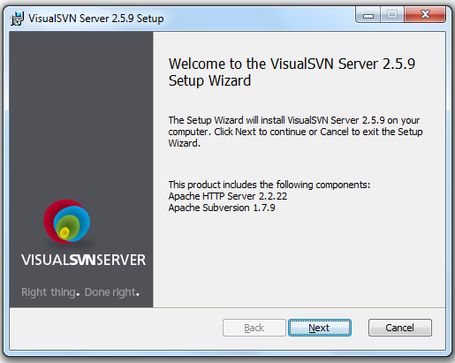
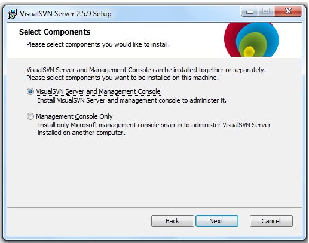
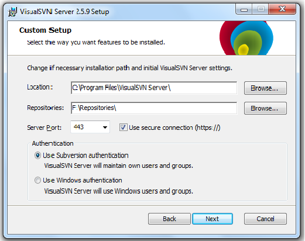
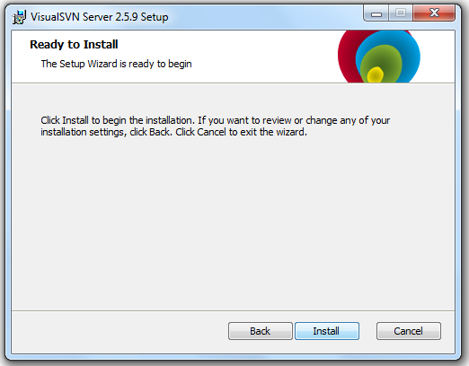
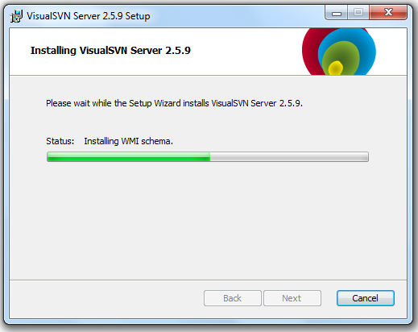
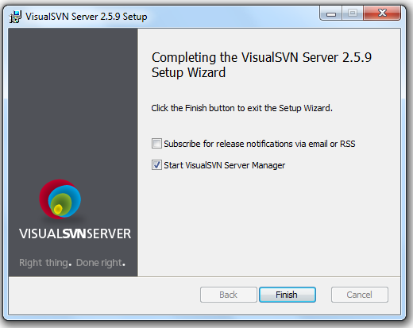
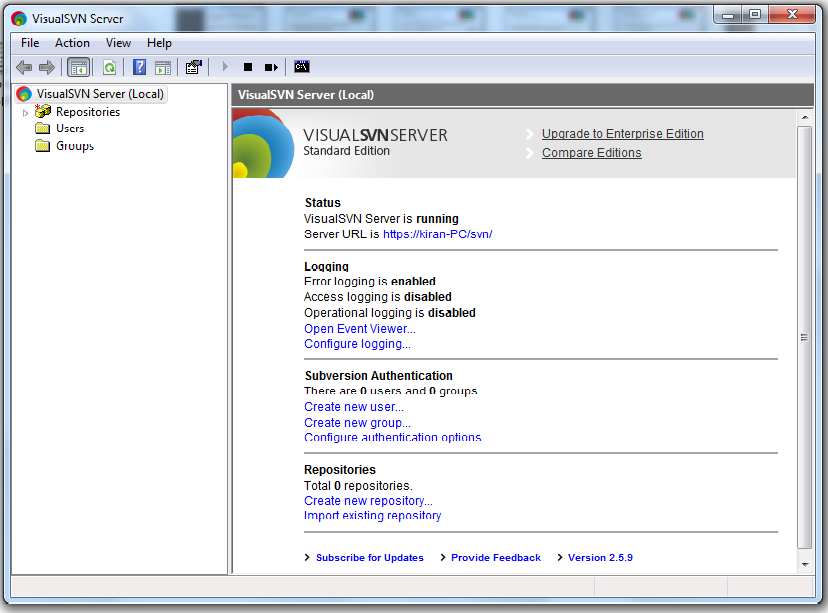

Subversion is a Software Configuration Management(SCM) implementation.
It allows developers to collaborate on code without need of file sharing system. It allows to track changes on the files and folders.
It allows concurrent development on the same files.
Infact SVN is a version management system designed as a replacement and improvement on CVS.
When working with any repository tool, we will have two systems, i.e.,
1) Repository System
2) Client System
Step 1: Go to http://www.visualsvn.com/server/download/ and download the VisualSVN Server or google with "VisualSVN-Server-2.5.9.msi". Its around 4.57MB file.
Step 2: Double click on the software and click run. You will get welcome wizard. Click next.

Step 3: Accept License agreement and click next.
Step 4: Now you will get select component wizard. First option will install both VisualSVN Server and management console(GUI for repository) on the same system. Second option is to install only management console. Here we prefer first option and click next.
Step 5: In the custom setup, you will see options like Location, Repositories, Server Port, Authentication. You can change the installation path. You can choose any location for repositories. This repositories folder contains the projects that we have stored in SVN. Here we have two types of Authentication. First is 'Use Subversive Authentication' where administrator can create users and groups in VisualSVN Server itself. Second option is 'Use Windows Authentication' wherein VisualSVN Server uses windows logon Authentication. Click Next.
Step 6: Now the setup wizard is ready to install. Click on Install button.



Now click on Finish.
Step 7: VisualSVN Server is successfully installed and the Server Window is opened as below image.
